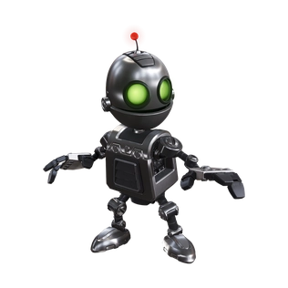
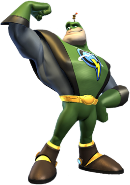
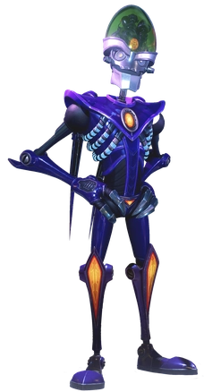

Ratchet & Clank: All 4 One Characters
Playable Characters

Ratchet is the primary protagonist of the Ratchet & Clank series, being one of the titular heroes and a main playable character in the games. He is an intergalactic hero, a skilled mechanic, and one of the last remaining lombaxes in the universe.
With (notorious intergallactic villian) Dr. Nefarious still on the loose, Ratchet claimed in an interview with Kip Darling and Pepper Fairbanks that he would not join the search, suggesting he had confidence in Qwark's ability. Later, Ratchet along with Clank followed Qwark to Luminopolis on Igliak, where he was supposed to receive an "Intergalactic Tool of Justice" award for defeating a Light-Eating Z'Grute, suspicious as Qwark had never done this. When arriving, Dr. Nefarious and his butler Lawrence appeared, and Nefarious resurrected a Light-Eating Z'Grute to kill them all, though he had no control over it and it instead ravaged the city. When Lawrence fled, announcing his resignation to Nefarious, Nefarious was forced to team up with Ratchet, Clank and Qwark to defeat it, though they were afterwards teleported away by a machine known as the Ephemeris to a testing laboratory on planet Magnus.
Clank is the titular deuteragonist and the secondary main playable character of the Ratchet & Clank series. He is a robot created by the Zoni, possessing a Zoni soul as a result, and is Ratchet's best friend.
With Dr. Nefarious still on the loose, Ratchet and Clank claimed in an interview with Kip Darling and Pepper Fairbanks that they would not join the search. Later, Clank followed Qwark with Ratchet to Luminopolis on Igliak, where Qwark was supposed to receive an "Intergalactic Tool of Justice" award for defeating a Light-Eating Z'Grute, which Qwark had never done. Dr. Nefarious and his butler Lawrence appeared on the scene, and Nefarious resurrected a Light-Eating Z'Grute to kill them all, though he had no control over it and it instead ravaged the city. When Lawrence fled the scene and resigned as Nefarious' butler, Nefarious was forced to team up with Ratchet, Clank and Qwark to defeat it, though they were afterward teleported away by a machine known as the Ephemeris to a testing laboratory on planet Magnus.
Captain Qwark is a major supporting character in the Ratchet & Clank series. He is one of the most frequently recurring characters, first as an antagonist in Ratchet & Clank and Going Commando as a self-absorbed, cowardly, and largely incompetent antihero willing to do anything to preserve his fame and public image. He is only willing to help when it benefits him personally, and is more than willing to betray his allies and fight against them when it suits him. Captain Qwark is an intergalactic celebrity from Kerwan in the Solana Galaxy, who is portrayed, marketed, and very liked by the populace as a superhero who is brave, noble, strong, and has defeated many intergalactic villains.
Qwark was interviewed by Kip Darling regarding the search for Dr. Nefarious, whose status had been updated from "dead" to "alive and at large". Qwark assured the public there was no danger as he looked outside his office and asked anyone he saw about Nefarious, to which he received no answer. Later, Qwark received a call that he was due to receive an "Intergalactic Tool of Justice Award" for defeating a Light-Eating Z'Grute. Despite having never done this, Qwark visited the city of Luminopolis on planet Igliak with Ratchet and Clank following him to receive the award from an anonymous character. However, Dr. Nefarious and Lawrence instead appeared, reanimating the Z'Grute, though losing control over it. Lawrence left, announcing his resignation, forcing Nefarious was forced to team up with Qwark, Ratchet, Clank and Qwark to defeat it, though they were then teleported away by a machine known as the Ephemeris to a testing laboratory on planet Magnus.
Dr. Nefarious waged a war in the Solana Galaxy with his robot and tyhrranoid forces, plotting to transform its population into robots with a superweapon known as the Biobliterator, and rule the galaxy..
Dr. Nefarious and Lawrence' threat level in Polaris had increased from "unknown" to "alive and at large", to which the newly elected President Qwark assured the galaxy there was no danger. Ratchet and Clank, while interviewed by Kip Darling and Pepper Fairbanks via satellite, stated they had full confidence in Qwark's ability to handle Nefarious again. Nefarious, having escaped, had obtained the remains of a Light-Eating Z'Grute, and set up a false award ceremony for Qwark in the depths of Igliak, for the award of "Intergalactic Tool of Justice" for allegedly defeating a Light-Eating Z'Grute. Qwark attended this ceremony, while Ratchet and Clank followed closely behind, suspicious. Arriving on the Nefarious shuttle, Nefarious had Lawrence re-animate the Z'Grute and announced he would unleash it on the city, though the Z'Grute raged uncontrollably and Lawrence simply walked away, announcing his registration. Nefarious was then forced to team up with Ratchet, Clank and Qwark to defeat the beast, which had attracted the attention of a vast and powerful machine known as Ephemeris the Creature Collector, which transported the four to a testing laboratory on planet Magnus.